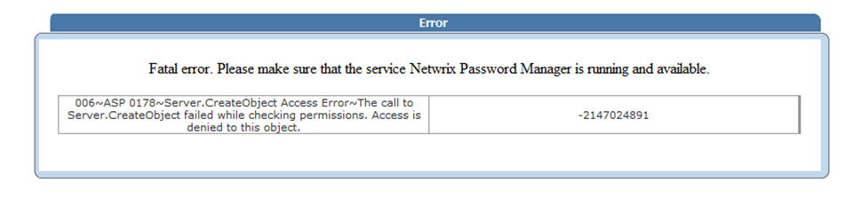
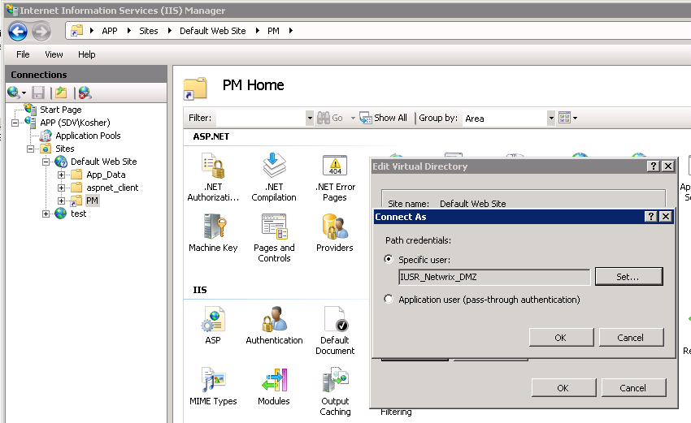
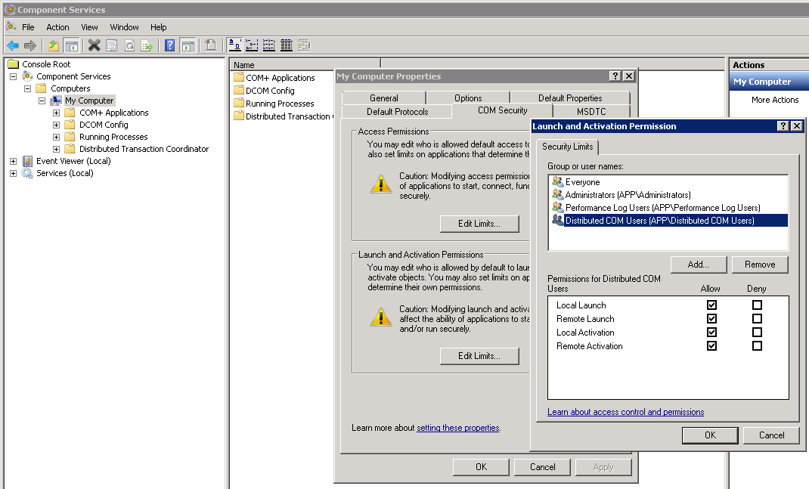
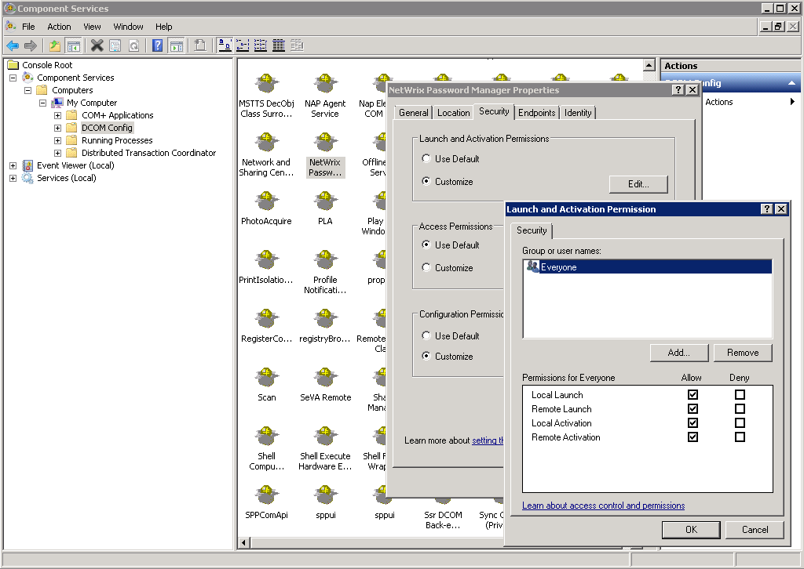

Admin and Helpdesk portals return Server.CreateObject Access error:

Self Service portal does not load at all:

To communicate with each other, frontend and backend servers need an account. The account called IUSR_Netwrix_DMZ should be created during the configuration steps as per the Administrator Guide. The issue occurs when IUSR_Netwrix_DMZ account does not have permissions to access the COM object of Netwrix Password Manager on the backend.
Make sure that:
To communicate with each other, frontend and backend servers need an account. The account called IUSR_Netwrix_DMZ should be created during the configuration steps as per the Administrator Guide. The issue occurs when IUSR_Netwrix_DMZ account does not have permissions to access the COM object of Netwrix Password Manager on the backend.
Make sure that:
- IUSR_Netwrix_DMZ account is specified in IIS Basic settings at Connect as

- IUSR_Netwrix_DMZ is added to local Distributed COM Users group on both frontend and backend servers
- IUSR_Netwrix_DMZ is NOT added to the User Rights Assignment " Deny Access to this computer from the network local policy on the backend
NOTE. The guide says that USR_Netwrix_DMZ should be a
member of Guests group on both server. However if the mentioned policy is enabled, Guests
are denied access, so either disable the policy, or remove the account from Guests group
in this case:
http://technet.microsoft.com/en-us/library/dn221954.aspx
- Default DCOM settings on both the front-end and the back-end grants full access to local Distributed COM Users

- Netwrix Password Manager COM object allows access to Everyone
